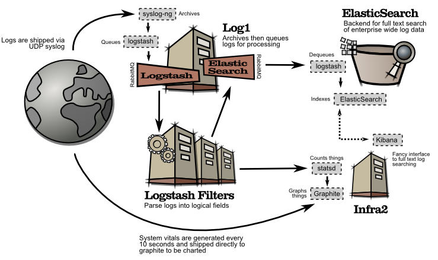

Kibana: Part of this complete breakfast metrics solution

Kibana is complemented by a range of free and open-source tools that can help you aggregate and deliver metrics, analytics and vital performance data. Here you'll find a log analysis infrastructure that can be dropped directly into an existing centralized syslog system, without affecting legacy applications.
Why don't the Logstash filter workers write directly to Elasticsearch? Good question. The answer involves pretty lines. Logstash will stop reading from the 'Logstash' AMQP exchange if it can't write to Elasticsearch, such as when it's under heavy load. When this happens, filtering can't happen, and the real-time data that Statsd relies on can not be delivered.